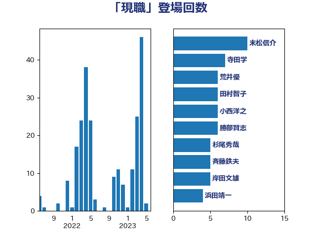

単語「現職」

| 末松信介 | 自由民主党 | 10 回 |
| 寺田学 | 立憲民主党 | 7 回 |
| 荒井優 | 立憲民主党 | 6 回 |
| 田村智子 | 日本共産党 | 6 回 |
| 小西洋之 | 立憲民主党 | 6 回 |
| 勝部賢志 | 立憲民主党 | 6 回 |
| 杉尾秀哉 | 立憲民主党 | 5 回 |
| 斉藤鉄夫 | 公明党 | 5 回 |
| 岸田文雄 | 自由民主党 | 5 回 |
| 浜田靖一 | 自由民主党 | 4 回 |
| 守島正 | 日本維新の会 | 4 回 |
| 水野素子 | 立憲民主党 | 3 回 |
| 林芳正 | 自由民主党 | 3 回 |
| 松野博一 | 自由民主党 | 3 回 |
| 杉本和巳 | 日本維新の会 | 3 回 |
| 音喜多駿 | 日本維新の会 | 2 回 |
| 菊田真紀子 | 立憲民主党 | 2 回 |
| 石井苗子 | 日本維新の会 | 2 回 |
| 浅田均 | 日本維新の会 | 2 回 |
| 浅川義治 | 日本維新の会 | 2 回 |
| 柚木道義 | 立憲民主党 | 2 回 |
| 後藤茂之 | 自由民主党 | 2 回 |
| 市村浩一郎 | 日本維新の会 | 2 回 |
| 岸真紀子 | 立憲民主党 | 2 回 |
| 尾身朝子 | 自由民主党 | 2 回 |
| 城井崇 | 立憲民主党 | 2 回 |
| 嘉田由紀子 | 無所属 | 2 回 |
| 和田有一朗 | 日本維新の会 | 2 回 |
| 吉良州司 | 無所属 | 2 回 |
| 高木宏壽 | 自由民主党 | 1 回 |
| 馬淵澄夫 | 立憲民主党 | 1 回 |
| 青山大人 | 立憲民主党 | 1 回 |
| 長谷川英晴 | 自由民主党 | 1 回 |
| 長浜博行 | 無所属 | 1 回 |
| 鈴木義弘 | 国民民主党 | 1 回 |
| 鈴木敦 | 国民民主党 | 1 回 |
| 鈴木庸介 | 立憲民主党 | 1 回 |
| 野村哲郎 | 自由民主党 | 1 回 |
| 道下大樹 | 立憲民主党 | 1 回 |
| 足立康史 | 日本維新の会 | 1 回 |
| 赤羽一嘉 | 公明党 | 1 回 |
| 西田昌司 | 自由民主党 | 1 回 |
| 藤田文武 | 日本維新の会 | 1 回 |
| 藤木眞也 | 自由民主党 | 1 回 |
| 葉梨康弘 | 自由民主党 | 1 回 |
| 美延映夫 | 日本維新の会 | 1 回 |
| 福島みずほ | 社会民主党 | 1 回 |
| 福山哲郎 | 立憲民主党 | 1 回 |
| 神谷裕 | 立憲民主党 | 1 回 |
| 磯崎仁彦 | 自由民主党 | 1 回 |
| 石田昌宏 | 自由民主党 | 1 回 |
| 田村貴昭 | 日本共産党 | 1 回 |
| 牧義夫 | 立憲民主党 | 1 回 |
| 清水貴之 | 日本維新の会 | 1 回 |
| 浜田聡 | NHK党 | 1 回 |
| 池畑浩太朗 | 日本維新の会 | 1 回 |
| 江田憲司 | 立憲民主党 | 1 回 |
| 櫻井周 | 立憲民主党 | 1 回 |
| 櫻井充 | 自由民主党 | 1 回 |
| 森田俊和 | 立憲民主党 | 1 回 |
| 森屋隆 | 立憲民主党 | 1 回 |
| 松沢成文 | 日本維新の会 | 1 回 |
| 松本剛明 | 自由民主党 | 1 回 |
| 松山政司 | 自由民主党 | 1 回 |
| 本庄知史 | 立憲民主党 | 1 回 |
| 山添拓 | 日本共産党 | 1 回 |
| 山崎正恭 | 公明党 | 1 回 |
| 山口那津男 | 公明党 | 1 回 |
| 小林茂樹 | 自由民主党 | 1 回 |
| 寺田静 | 無所属 | 1 回 |
| 寺田稔 | 自由民主党 | 1 回 |
| 宮本徹 | 日本共産党 | 1 回 |
| 宮本岳志 | 日本共産党 | 1 回 |
| 宮口治子 | 立憲民主党 | 1 回 |
| 大島九州男 | れいわ新選組 | 1 回 |
| 塩村あやか | 立憲民主党 | 1 回 |
| 塩川鉄也 | 日本共産党 | 1 回 |
| 堤かなめ | 立憲民主党 | 1 回 |
| 堂故茂 | 自由民主党 | 1 回 |
| 吉良よし子 | 日本共産党 | 1 回 |
| 古川直季 | 自由民主党 | 1 回 |
| 北神圭朗 | 無所属 | 1 回 |
| 前原誠司 | 国民民主党 | 1 回 |
| 倉林明子 | 日本共産党 | 1 回 |
| 佐藤正久 | 自由民主党 | 1 回 |
| 伴野豊 | 立憲民主党 | 1 回 |
| 伊藤岳 | 日本共産党 | 1 回 |
| 伊波洋一 | 無所属 | 1 回 |
| 仁比聡平 | 日本共産党 | 1 回 |
| 仁木博文 | 無所属 | 1 回 |
| 井上哲士 | 日本共産党 | 1 回 |
| 丸川珠代 | 自由民主党 | 1 回 |
| 中野英幸 | 自由民主党 | 1 回 |
| 中川貴元 | 自由民主党 | 1 回 |
| 中川正春 | 立憲民主党 | 1 回 |
| 世耕弘成 | 自由民主党 | 1 回 |
| 三上えり | 立憲民主党 | 1 回 |
| おおつき紅葉 | 立憲民主党 | 1 回 |